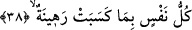
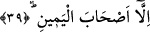

düşmüşlerdir.
38. Her nefis, yaptıklarına karşılık bir rehindir;
Gerek insan gerek cin mükellef olan “her nefis yaptıklarına karşılık bir rehindir.”
Allah katında amellerine karşılık durdurulup alıkonulur. Bâzı tefsir kitaplarında ifâde
olunduğuna göre âyetin mânâsı şöyledir: Her nefis kazanmış olduğu kötü ameller
sebebiyle Allah’ın katında rehin tutulur. Rehin, herhangi bir alacaklı şahsın birisine
vermiş olduğuna karşılık ondan almış olduğu şey demektir. Mürtehin ise rehin verilen
malı alan alacaklı kişi demektir. Buna göre âyetin mânâsı üzerinde düşünecek olursak
her mükellefin nefsi Allah katında onun kendisine yüklemiş olduğu mükellefiyetler -ki
bunlar sırf Allah hakkıdır- sebebiyle rehin tutulmuş, alıkonulmuştur. Eğer mükellef o
yükümlülükleri kendisine vâcip kılındığı biçimiyle edâ etmiş olursa boynunu kurtarır,
nefsini temize çıkarır. Eğer bunu yapmamışsa nefsi Allah’ın katında rehin olarak
alıkonulmuş olur.
Bâzı âlimlere göre âyette yer alan “rehine” kelimesi rehn mânâsına isimdir. Tıpkı
“şetîme” kelimesinin “şetm” anlamına isim olduğu gibi. Buna göre kelime sonundaki
“ta” kelimenin vasıflıktan isimliğe nakledildiğini gösteren bir alâmet olmuş olur.
Fethurrahman’da ifâde edildiğine göre kelimenin sonundaki “ta” mubalağa ifâde
etmek ya da kelimeyi müennes hâle getirmek için eklenmiştir. Yoksa insan veya benzeri
bir mânâya gelsin diye getirilmemiştir. Bu âlimlere göre “rehîne” kelimesi sıfat
değildir. Eğer böyle olsaydı “rehin” denmesi gerekirdi. Çünkü “fâil” vezni -burada-
ism-i mef’ûl anlamınadır. Bu kalıp bu anlama geldiğinde sonuna “ta” harfi gelmez. Tam
tersine müzekkerliği ve müennesliği farklı yazılmaz aynı şekilde kalır. Ancak kelimenin
anlamı “ism-i fâil” anlamına olduğunda o zaman müennese sıfat olursa sonuna “ta” harfi
getirilir. Tıpkı “
” âyetindeki “karibun” kelimesinde olduğu gibi.
Râğıb İsfahânî şöyle diyor: Âyetteki “rehine” kelimesi ism-i fâil mânâsınadır yâni
her nefis kazandıklarına karşılık Allah’ın katında rehine tutulacaktır. Bâzılarına göre ise
bu kelime ism-i mef’ûl mânâsınadır. Bu takdirde âyetin anlamı; her nefis önden
gönderdiği amelinin karşılığında rehin tutulmaktadır. Buna göre şöyle bir düşünce söz
konusudur; Rehin alacaklı nezdinde tutulup hapsedildiğine göre istiâre yoluyla
hapsedilen kimseye de “rehin” ismi verilmiş olur.